2 Cohesión Horizontal
La dimensión horizontal está dirigida hacia la cohesión dentro de la sociedad civil y posee indicadores subjetivos y objetivos. Los indicadores subjetivos incluyen la cohesión entre los ciudadanos individuales, así como la cohesión entre diferentes grupos sociales, mientras que los indicadores objetivos incluyen cómo se manifiesta la cohesión, a partir del grado de participación social de las personas. Se compone de 3 subdimensiones:
Sentido de Pertenencia
Calidad de Vida en el Vecindario
Redes Sociales
2.1 Subdimensiones
2.1.1 Sentido de Pertenencia
Busca medir el grado en que las personas se sienten parte de una comunidad política nacional, el orgullo de pertenecer a ella, a sus instituciones, tradiciones y costumbres.
LAPOP incluye dos indicadores que miden orgullo sobre el sistema político y necesidad de apoyar el sistema político del país. Por su lado, WVS incluye preguntas sobre orgullo de pertenecer al país y sobre la posibilidad de luchar en un guerra por el país.
| Variable | Estadísticas / Valores | Frec. (% sobre válidos) | Gráfico | Válido | Perdidos | |||||||||||||||||||||||||||||||||||||||||||||||||||||||
|---|---|---|---|---|---|---|---|---|---|---|---|---|---|---|---|---|---|---|---|---|---|---|---|---|---|---|---|---|---|---|---|---|---|---|---|---|---|---|---|---|---|---|---|---|---|---|---|---|---|---|---|---|---|---|---|---|---|---|---|---|
| pais [character] |
|
|
 |
232 (100,0%) | 0 (0,0%) | |||||||||||||||||||||||||||||||||||||||||||||||||||||||
| wave [numeric] |
|
11 valores distintos |  |
232 (100,0%) | 0 (0,0%) | |||||||||||||||||||||||||||||||||||||||||||||||||||||||
| Orgullo Sist. Político [numeric] |
|
223 valores distintos |  |
230 (99,1%) | 2 (0,9%) | |||||||||||||||||||||||||||||||||||||||||||||||||||||||
| Deber de apoyar Sist. Político [numeric] |
|
223 valores distintos |  |
230 (99,1%) | 2 (0,9%) | |||||||||||||||||||||||||||||||||||||||||||||||||||||||
| Voluntad de Luchar por el País [numeric] |
|
36 valores distintos |  |
133 (57,3%) | 99 (42,7%) | |||||||||||||||||||||||||||||||||||||||||||||||||||||||
| Orgullo Nacional [numeric] |
|
36 valores distintos |  |
134 (57,8%) | 98 (42,2%) |
Descriptivos indicadores de interés – Sentido de Pertenencia
Correlaciones
Nota. La correlación se realizó con datos imputados.
Por criterios estadísticos y teóricos, se dejará una única variable: Orgullo Nacional (WVS).
2.1.2 Calidad de vida en el vecindario
LAPOP incluye una varios indicadores de calidad de vida urbana (principalmente, acceso a servicios básicos), así como indicadores subjetivos y objetivos de calidad. Por otro lado, la WVS incluye un indicador de confianza en los vecinos
| Variable | Estadísticas / Valores | Frec. (% sobre válidos) | Gráfico | Válido | Perdidos | |||||||||||||||||||||||||||||||||||||||||||||||||||||||
|---|---|---|---|---|---|---|---|---|---|---|---|---|---|---|---|---|---|---|---|---|---|---|---|---|---|---|---|---|---|---|---|---|---|---|---|---|---|---|---|---|---|---|---|---|---|---|---|---|---|---|---|---|---|---|---|---|---|---|---|---|
| pais [character] |
|
|
 |
232 (100,0%) | 0 (0,0%) | |||||||||||||||||||||||||||||||||||||||||||||||||||||||
| wave [numeric] |
|
11 valores distintos |  |
232 (100,0%) | 0 (0,0%) | |||||||||||||||||||||||||||||||||||||||||||||||||||||||
| Percepción seguridad [numeric] |
|
221 valores distintos |  |
230 (99,1%) | 2 (0,9%) | |||||||||||||||||||||||||||||||||||||||||||||||||||||||
| Victima de delitos [numeric] |
|
206 valores distintos |  |
230 (99,1%) | 2 (0,9%) | |||||||||||||||||||||||||||||||||||||||||||||||||||||||
| Satisfacción vías [numeric] |
|
102 valores distintos |  |
205 (88,4%) | 27 (11,6%) | |||||||||||||||||||||||||||||||||||||||||||||||||||||||
| Satisfacción escuelas [numeric] |
|
104 valores distintos |  |
206 (88,8%) | 26 (11,2%) | |||||||||||||||||||||||||||||||||||||||||||||||||||||||
| Satisfacción servicios sanitarios [numeric] |
|
26 valores distintos |  |
84 (36,2%) | 148 (63,8%) | |||||||||||||||||||||||||||||||||||||||||||||||||||||||
| Satisfacción salud [numeric] |
|
104 valores distintos |  |
206 (88,8%) | 26 (11,2%) | |||||||||||||||||||||||||||||||||||||||||||||||||||||||
| Confianza en los vecinos [numeric] |
|
36 valores distintos |  |
130 (56,0%) | 102 (44,0%) |
Descriptivos indicadores de interés – Calidad de Vida en el Vecindario
Correlaciones
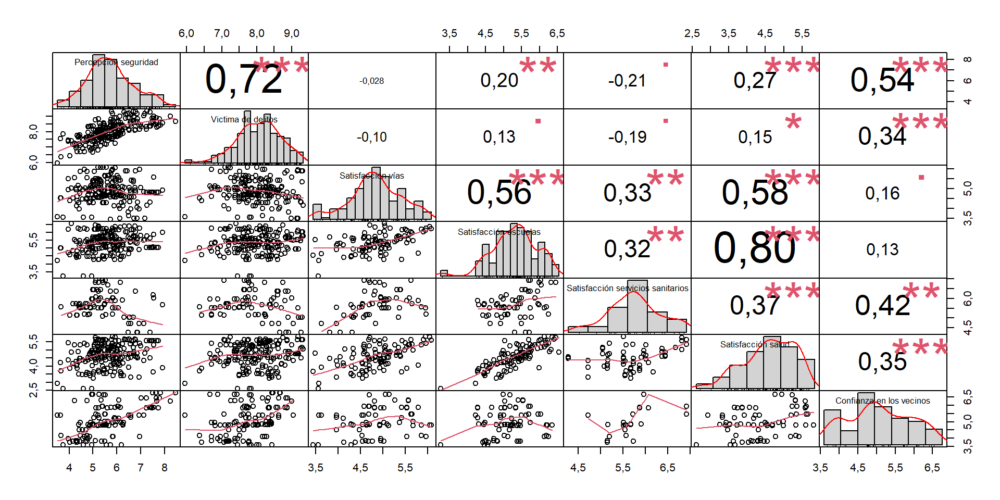
Correlaciones
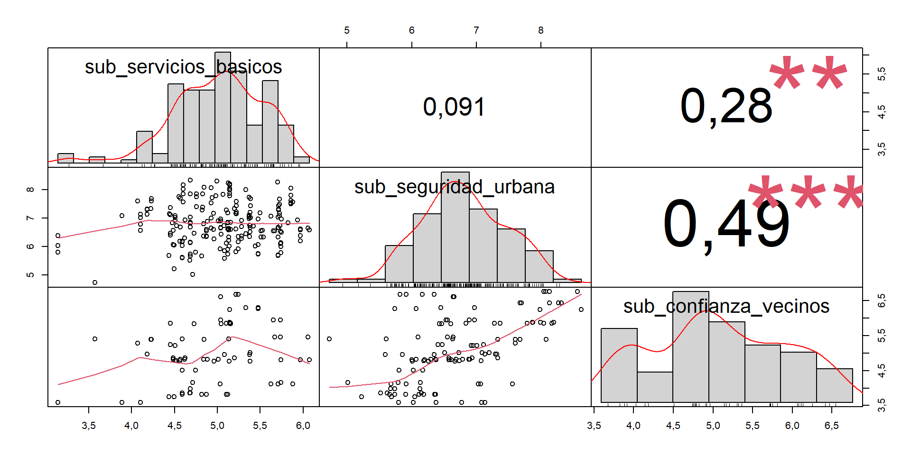
Se eliminarán las variables de acceso a servicios básicos.
2.1.3 Redes
LAPOP incluye preguntas de participación cívica en organizaciones civiles, tales como organizaciones religiosas, escolares y vecinales, además de un indicador de confianza interpersonal. Por su lado, la WVS incluye indicadores de comportamiento “antisocial”, que fueron invertidas para medir comportamiento cívico o prosocial.
| Variable | Estadísticas / Valores | Frec. (% sobre válidos) | Gráfico | Válido | Perdidos | |||||||||||||||||||||||||||||||||||||||||||||||||||||||
|---|---|---|---|---|---|---|---|---|---|---|---|---|---|---|---|---|---|---|---|---|---|---|---|---|---|---|---|---|---|---|---|---|---|---|---|---|---|---|---|---|---|---|---|---|---|---|---|---|---|---|---|---|---|---|---|---|---|---|---|---|
| pais [character] |
|
|
 |
232 (100,0%) | 0 (0,0%) | |||||||||||||||||||||||||||||||||||||||||||||||||||||||
| wave [numeric] |
|
11 valores distintos |  |
232 (100,0%) | 0 (0,0%) | |||||||||||||||||||||||||||||||||||||||||||||||||||||||
| Confianza Interpersonal [numeric] |
|
222 valores distintos |  |
230 (99,1%) | 2 (0,9%) | |||||||||||||||||||||||||||||||||||||||||||||||||||||||
| Reuniones religiosas [numeric] |
|
175 valores distintos |  |
224 (96,6%) | 8 (3,4%) | |||||||||||||||||||||||||||||||||||||||||||||||||||||||
| Reuniones escuela [numeric] |
|
175 valores distintos |  |
224 (96,6%) | 8 (3,4%) | |||||||||||||||||||||||||||||||||||||||||||||||||||||||
| Reuniones vecinales [numeric] |
|
191 valores distintos |  |
227 (97,8%) | 5 (2,2%) | |||||||||||||||||||||||||||||||||||||||||||||||||||||||
| No aceptar sobornos [numeric] |
|
36 valores distintos |  |
134 (57,8%) | 98 (42,2%) | |||||||||||||||||||||||||||||||||||||||||||||||||||||||
| Pagar Impuestos [numeric] |
|
36 valores distintos |  |
134 (57,8%) | 98 (42,2%) | |||||||||||||||||||||||||||||||||||||||||||||||||||||||
| Recibir beneficios solo si se necesitan [numeric] |
|
36 valores distintos |  |
134 (57,8%) | 98 (42,2%) | |||||||||||||||||||||||||||||||||||||||||||||||||||||||
| Pagar el transporte público [numeric] |
|
35 valores distintos |  |
133 (57,3%) | 99 (42,7%) |
Descriptivos indicadores de interés – Redes
Correlaciones
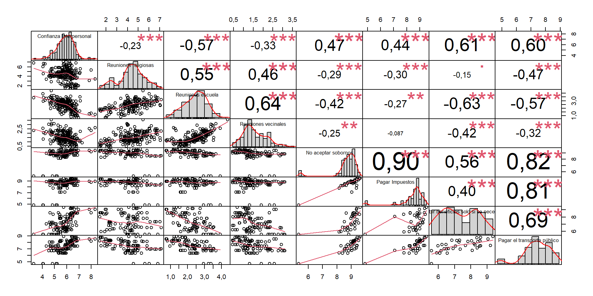
Calcular puntaje
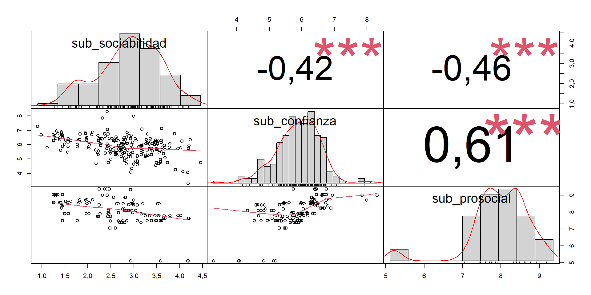
Se eliminarán los indiciadores de sociabilidad, pues la correlación negativa dificultaría la interpretación sustantiva del indice.
2.2 Análisis Factorial Exploratorio
2.2.1 Propuesta A: 4 factores con indicadores de pertenencia WVS
Esta propuesta incluye los indicadores subjetivos y objetivos de seguridad de LAPOP (aoj11 y vic1ext), los indiciadores de comportamiento prosocial de WVS (evadir_impuestos, aceptar_soborno, evadir_transporte), el indicador de confianza en vecinos de WVS (confiar_vecinos) y el de confianza interpersonal de LAPOP (it1).
Adecuación de los datos
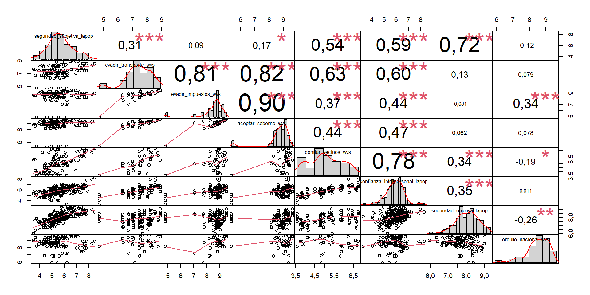
En general, se observan correlaciones sobre 0,3 y 0,5. Sin embargo, el indicador de orgullo nacional muestra correlaciones más inconsistentes con el resto de los indicadores
Kaiser-Meyer-Olkin factor adequacy
Call: KMO(r = subset_a)
Overall MSA = 0,7
MSA for each item =
seguridad_subjetiva_lapop evadir_transporte_wvs
0,71 0,89
evadir_impuestos_wvs aceptar_soborno_wvs
0,63 0,67
confiar_vecinos_wvs confianza_interpersonal_lapop
0,75 0,80
seguridad_objetiva_lapop orgullo_nacional_wvs
0,64 0,25 R was not square, finding R from data$chisq
[1] 1489,514
$p.value
[1] 0,00000000000000000000000000000000000000000000000000000000000000000000000000000000000000000000000000000000000000000000000000000000000000000000000000000000000000000000000000000000000000000000000000000000000000000000000000000000000000000000000000000000000000000000000000000000000000000000000000000001275505
$df
[1] 28Tanto el KMO (0,76) como el test de esfericidad de Bartlett (\(\chi^2\)= 1489,5; p<0,001, df=28) indican que los datos son adecuados para realizar un análisis factorial. Análisis Paralelo
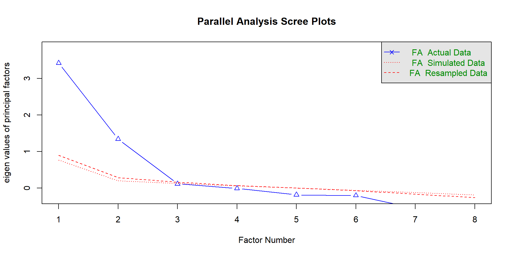
Parallel analysis suggests that the number of factors = 2 and the number of components = NAEl análisis paralelo sugiere la existencia de dos factores.
Modelo con dos factores
Factor Analysis using method = ml
Call: fa(r = subset_a, nfactors = 2, rotate = "none", fm = "ml")
Standardized loadings (pattern matrix) based upon correlation matrix
ML1 ML2 h2 u2 com
seguridad_subjetiva_lapop 0,73 0,54 0,455 1,0
evadir_transporte_wvs 0,82 0,79 0,206 1,4
evadir_impuestos_wvs 1,00 1,00 0,005 1,0
aceptar_soborno_wvs 0,91 0,84 0,157 1,0
confiar_vecinos_wvs 0,77 0,75 0,250 1,5
confianza_interpersonal_lapop 0,46 0,72 0,72 0,276 1,7
seguridad_objetiva_lapop 0,61 0,37 0,626 1,0
orgullo_nacional_wvs 0,23 0,767 2,0
ML1 ML2
SS loadings 2,97 2,29
Proportion Var 0,37 0,29
Cumulative Var 0,37 0,66
Proportion Explained 0,57 0,43
Cumulative Proportion 0,57 1,00
Mean item complexity = 1,3
Test of the hypothesis that 2 factors are sufficient.
df null model = 28 with the objective function = 6,55 with Chi Square = 1489,51
df of the model are 13 and the objective function was 1,05
The root mean square of the residuals (RMSR) is 0,09
The df corrected root mean square of the residuals is 0,13
The harmonic n.obs is 140 with the empirical chi square 62,15 with prob < 0,000000022
The total n.obs was 232 with Likelihood Chi Square = 237,3 with prob < 0,00000000000000000000000000000000000000000028
Tucker Lewis Index of factoring reliability = 0,667
RMSEA index = 0,273 and the 90 % confidence intervals are 0,243 0,304
BIC = 166,49
Fit based upon off diagonal values = 0,97
Measures of factor score adequacy
ML1 ML2
Correlation of (regression) scores with factors 1,00 0,94
Multiple R square of scores with factors 1,00 0,88
Minimum correlation of possible factor scores 0,99 0,75La varianza explicada por los dos factores es de un 66%. El indicadores de orgullo nacional no se anida en ningún factor. El RMSEA (0,273) sugiere un mal ajuste del modelo.
Factor Analysis using method = ml
Call: fa(r = subset_a, nfactors = 3, rotate = "none", fm = "ml")
Standardized loadings (pattern matrix) based upon correlation matrix
ML2 ML3 ML1 h2 u2 com
seguridad_subjetiva_lapop 0,71 0,57 0,431 1,2
evadir_transporte_wvs 0,85 0,80 0,199 1,2
evadir_impuestos_wvs 0,88 0,45 0,98 0,019 1,5
aceptar_soborno_wvs 0,93 0,90 0,102 1,1
confiar_vecinos_wvs 0,55 0,65 0,75 0,251 2,0
confianza_interpersonal_lapop 0,53 0,70 0,78 0,219 1,9
seguridad_objetiva_lapop 0,54 0,37 0,632 1,5
orgullo_nacional_wvs 0,99 1,00 0,005 1,0
ML2 ML3 ML1
SS loadings 3,01 1,78 1,35
Proportion Var 0,38 0,22 0,17
Cumulative Var 0,38 0,60 0,77
Proportion Explained 0,49 0,29 0,22
Cumulative Proportion 0,49 0,78 1,00
Mean item complexity = 1,4
Test of the hypothesis that 3 factors are sufficient.
df null model = 28 with the objective function = 6,55 with Chi Square = 1489,51
df of the model are 7 and the objective function was 0,58
The root mean square of the residuals (RMSR) is 0,08
The df corrected root mean square of the residuals is 0,15
The harmonic n.obs is 140 with the empirical chi square 45,4 with prob < 0,00000011
The total n.obs was 232 with Likelihood Chi Square = 130,94 with prob < 0,0000000000000000000000004
Tucker Lewis Index of factoring reliability = 0,658
RMSEA index = 0,276 and the 90 % confidence intervals are 0,237 0,319
BIC = 92,81
Fit based upon off diagonal values = 0,97
Measures of factor score adequacy
ML2 ML3 ML1
Correlation of (regression) scores with factors 0,99 0,93 1,00
Multiple R square of scores with factors 0,98 0,86 1,00
Minimum correlation of possible factor scores 0,97 0,72 0,99La varianza explicada sube a un 77% y orgullo nacional ahora sí cae dentro de un factor. Sin embargo, los índices de ajuste no mejoran (RMSEA= 0,276)
Factor Analysis using method = ml
Call: fa(r = subset_a, nfactors = 4, rotate = "none", fm = "ml")
Standardized loadings (pattern matrix) based upon correlation matrix
ML1 ML2 ML3 ML4 h2 u2 com
seguridad_subjetiva_lapop 0,55 0,76 0,93 0,071 2,0
evadir_transporte_wvs 0,71 0,54 0,80 0,197 1,9
evadir_impuestos_wvs 0,49 0,86 0,98 0,021 1,6
aceptar_soborno_wvs 0,55 0,76 0,93 0,066 2,1
confiar_vecinos_wvs 0,99 1,00 0,005 1,0
confianza_interpersonal_lapop 0,81 0,71 0,292 1,2
seguridad_objetiva_lapop 0,63 0,63 0,374 2,2
orgullo_nacional_wvs 0,44 0,72 0,73 0,270 1,7
ML1 ML2 ML3 ML4
SS loadings 3,10 1,94 1,03 0,63
Proportion Var 0,39 0,24 0,13 0,08
Cumulative Var 0,39 0,63 0,76 0,84
Proportion Explained 0,46 0,29 0,15 0,09
Cumulative Proportion 0,46 0,75 0,91 1,00
Mean item complexity = 1,7
Test of the hypothesis that 4 factors are sufficient.
df null model = 28 with the objective function = 6,55 with Chi Square = 1489,51
df of the model are 2 and the objective function was 0,01
The root mean square of the residuals (RMSR) is 0
The df corrected root mean square of the residuals is 0,02
The harmonic n.obs is 140 with the empirical chi square 0,18 with prob < 0,91
The total n.obs was 232 with Likelihood Chi Square = 3,27 with prob < 0,19
Tucker Lewis Index of factoring reliability = 0,988
RMSEA index = 0,052 and the 90 % confidence intervals are 0 0,151
BIC = -7,62
Fit based upon off diagonal values = 1
Measures of factor score adequacy
ML1 ML2 ML3 ML4
Correlation of (regression) scores with factors 1,00 0,99 0,95 0,87
Multiple R square of scores with factors 1,00 0,98 0,91 0,76
Minimum correlation of possible factor scores 0,99 0,96 0,81 0,52La varianza explicada sube el 84%, aunque los autovalores del factor 4 están bajo el umbral recomendado (0,63). Con todo, todas las comunalidades están por sobre 0,5 y el índice RMSEA en significativo al 90% de confianza (0,052).
Se rotó el modelo para obtener una solución clara. Se utilizado el método oblimin, asumiendo correlación entre los factores.
Loading required namespace: GPArotationFactor Analysis using method = ml
Call: fa(r = subset_a, nfactors = 4, rotate = "oblimin", fm = "ml")
Standardized loadings (pattern matrix) based upon correlation matrix
ML2 ML3 ML1 ML4 h2 u2 com
seguridad_subjetiva_lapop 0,93 0,93 0,071 1,0
evadir_transporte_wvs 0,72 0,80 0,197 1,3
evadir_impuestos_wvs 0,93 0,98 0,021 1,1
aceptar_soborno_wvs 1,01 0,93 0,066 1,0
confiar_vecinos_wvs 1,00 1,00 0,005 1,0
confianza_interpersonal_lapop 0,61 0,71 0,292 1,6
seguridad_objetiva_lapop 0,79 0,63 0,374 1,1
orgullo_nacional_wvs 0,84 0,73 0,270 1,0
ML2 ML3 ML1 ML4
SS loadings 2,55 1,66 1,66 0,84
Proportion Var 0,32 0,21 0,21 0,10
Cumulative Var 0,32 0,53 0,73 0,84
Proportion Explained 0,38 0,25 0,25 0,12
Cumulative Proportion 0,38 0,63 0,88 1,00
With factor correlations of
ML2 ML3 ML1 ML4
ML2 1,00 0,13 0,48 0,24
ML3 0,13 1,00 0,52 -0,16
ML1 0,48 0,52 1,00 -0,09
ML4 0,24 -0,16 -0,09 1,00
Mean item complexity = 1,1
Test of the hypothesis that 4 factors are sufficient.
df null model = 28 with the objective function = 6,55 with Chi Square = 1489,51
df of the model are 2 and the objective function was 0,01
The root mean square of the residuals (RMSR) is 0
The df corrected root mean square of the residuals is 0,02
The harmonic n.obs is 140 with the empirical chi square 0,18 with prob < 0,91
The total n.obs was 232 with Likelihood Chi Square = 3,27 with prob < 0,19
Tucker Lewis Index of factoring reliability = 0,988
RMSEA index = 0,052 and the 90 % confidence intervals are 0 0,151
BIC = -7,62
Fit based upon off diagonal values = 1
Measures of factor score adequacy
ML2 ML3 ML1 ML4
Correlation of (regression) scores with factors 0,99 0,97 1,00 0,90
Multiple R square of scores with factors 0,98 0,94 0,99 0,81
Minimum correlation of possible factor scores 0,96 0,87 0,99 0,63Se logra una solución clara:
- Factor 1 (32% de varianza explicada): Agrupa los indicadores de comportamiento prosocial de la encuesta mundial de valores.
- Factor 2: (21% de varianza explicada): Agrupa los indicadores subjetivos y objetivos de seguridad de LAPOP
- Factor 3 (21% de la varianza explicada): Agrupa los indicadores de confianza en la comunidad e interpersonal
- Factor 4 (10% de la varianza explicada): Incluye únicamente el indicador de Orgullo nacional de la Encuesta Mundial de Valores.
Correlaciones subdimensiones
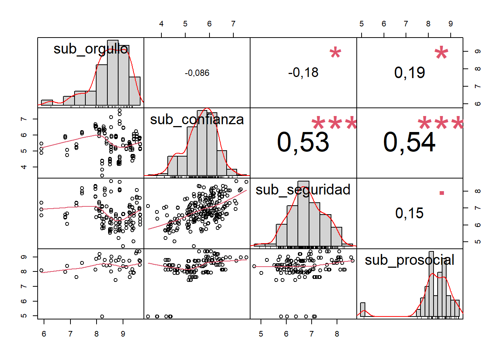
Se calculó el promedio simple de los indicadores incluidos en cada factor y se hizo un análisis de correlación entre los índices resultantes. Se observa que el indicador de orgullo nacional sigue mostrando correlaciones bajas con las demás.
Correlaciones subdimensiones solo LAPOP
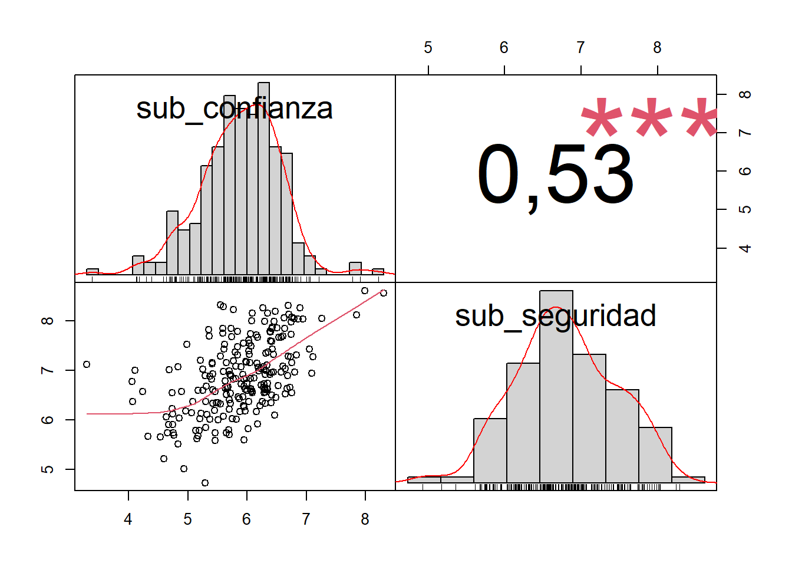
Por último, se hizo un ejercicio similar pero incluyendo únicamente indicadores incluidos en LAPOP. El resultado de esto, es que dos subdimensiones quedan (orgullo nacional y comportamiento prosocial) quedan fuera del análisis. Sin embargo, la correlación entre las dos subdimensiones restantes es buena (0,53).
2.2.2 Propuesta B: 4 factores son indicadores de pertenencia LAPOP
Se hizo el mismo ejercicio pero esta vez incluyendo los indicadores de pertenencia y orgullo institucional de LAPOP con el fin de comparar su rendimiento estadístico con los de la WVS.
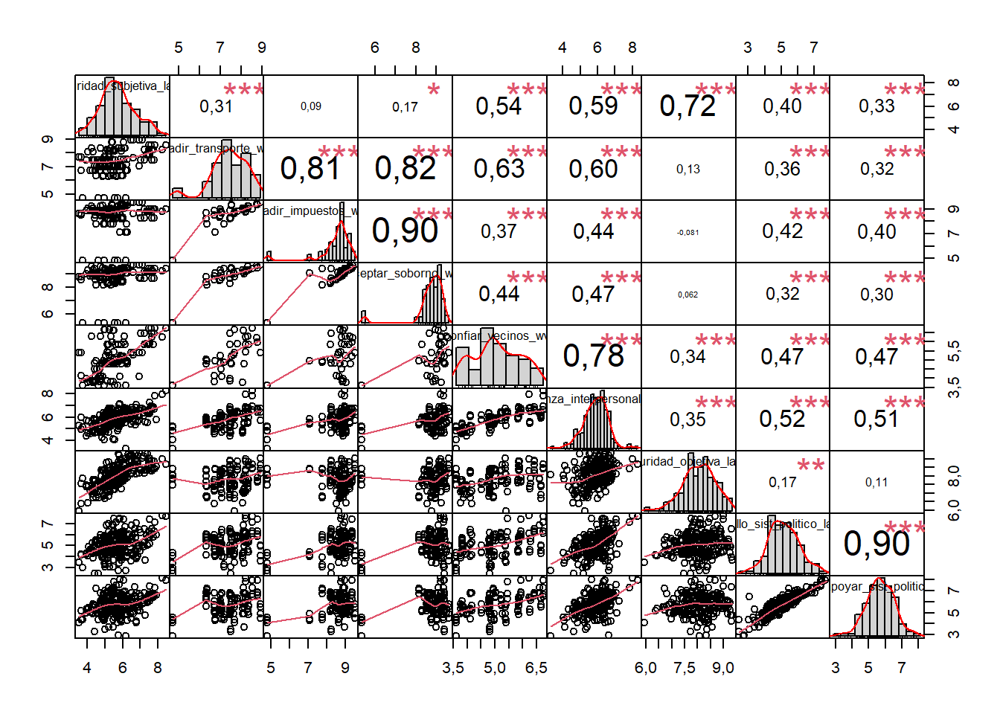
A primera vista, las correlaciones de estos dos nuevos indicadores mejoran en relación a los indicadores de la WVS
Kaiser-Meyer-Olkin factor adequacy
Call: KMO(r = subset_b)
Overall MSA = 0,76
MSA for each item =
seguridad_subjetiva_lapop evadir_transporte_wvs
0,75 0,85
evadir_impuestos_wvs aceptar_soborno_wvs
0,70 0,77
confiar_vecinos_wvs confianza_interpersonal_lapop
0,79 0,87
seguridad_objetiva_lapop orgullo_sist_politico_lapop
0,62 0,72
deber_apoyar_sist_politico_lapop
0,69 R was not square, finding R from data$chisq
[1] 1862,051
$p.value
[1] 0
$df
[1] 36Como era de esperar, KMO (0,76) y el test de esfericidad de Bartlett (\(\chi^2\)= 1862,05; p<0,001, df=36) indican que los datos son adecuados para realizar un análisis factorial.
Factor Analysis using method = ml
Call: fa(r = subset_b, nfactors = 4, rotate = "none", fm = "ml")
Standardized loadings (pattern matrix) based upon correlation matrix
ML1 ML2 ML3 ML4 h2 u2 com
seguridad_subjetiva_lapop 0,55 0,70 0,88 0,1175 2,3
evadir_transporte_wvs 0,73 0,47 0,82 0,1763 2,0
evadir_impuestos_wvs 0,54 0,81 0,97 0,0287 1,8
aceptar_soborno_wvs 0,58 0,69 0,88 0,1240 2,3
confiar_vecinos_wvs 0,97 0,99 0,0088 1,1
confianza_interpersonal_lapop 0,82 0,71 0,2944 1,1
seguridad_objetiva_lapop 0,66 0,63 0,3671 1,9
orgullo_sist_politico_lapop 0,58 0,70 0,87 0,1286 2,2
deber_apoyar_sist_politico_lapop 0,57 0,75 0,95 0,0550 2,1
ML1 ML2 ML3 ML4
SS loadings 3,85 1,65 1,22 0,98
Proportion Var 0,43 0,18 0,14 0,11
Cumulative Var 0,43 0,61 0,75 0,86
Proportion Explained 0,50 0,21 0,16 0,13
Cumulative Proportion 0,50 0,71 0,87 1,00
Mean item complexity = 1,9
Test of the hypothesis that 4 factors are sufficient.
df null model = 36 with the objective function = 8,2 with Chi Square = 1862,05
df of the model are 6 and the objective function was 0,05
The root mean square of the residuals (RMSR) is 0,01
The df corrected root mean square of the residuals is 0,02
The harmonic n.obs is 151 with the empirical chi square 0,78 with prob < 0,99
The total n.obs was 232 with Likelihood Chi Square = 11,87 with prob < 0,065
Tucker Lewis Index of factoring reliability = 0,98
RMSEA index = 0,065 and the 90 % confidence intervals are 0 0,119
BIC = -20,81
Fit based upon off diagonal values = 1
Measures of factor score adequacy
ML1 ML2 ML3 ML4
Correlation of (regression) scores with factors 1,00 0,99 0,97 0,93
Multiple R square of scores with factors 0,99 0,97 0,94 0,86
Minimum correlation of possible factor scores 0,99 0,94 0,88 0,71Los factores se comportan de manera similar a la propuesta anterior, con el modelo de 4 factores logrando un mejor ajuste estadístico. Todos los factores logran eigenvalues por sobre 0,7 y en conjunto explican una varianza del 86%. Todas las comunalidades se encuentran sobre el 50%. Los índices de bondad implican un buen ajuste.
Al igual que en la propuesta anterior, se realizó una rotación oblimin para dar con una solución más clara.
Factor Analysis using method = ml
Call: fa(r = subset_b, nfactors = 4, rotate = "oblimin", fm = "ml")
Standardized loadings (pattern matrix) based upon correlation matrix
ML2 ML3 ML4 ML1 h2 u2 com
seguridad_subjetiva_lapop 0,90 0,88 0,1175 1,0
evadir_transporte_wvs 0,76 0,82 0,1763 1,3
evadir_impuestos_wvs 0,99 0,97 0,0287 1,1
aceptar_soborno_wvs 0,95 0,88 0,1240 1,0
confiar_vecinos_wvs 0,98 0,99 0,0088 1,0
confianza_interpersonal_lapop 0,50 0,71 0,2944 2,0
seguridad_objetiva_lapop 0,84 0,63 0,3671 1,0
orgullo_sist_politico_lapop 0,90 0,87 0,1286 1,0
deber_apoyar_sist_politico_lapop 0,97 0,95 0,0550 1,0
ML2 ML3 ML4 ML1
SS loadings 2,60 1,90 1,66 1,53
Proportion Var 0,29 0,21 0,18 0,17
Cumulative Var 0,29 0,50 0,69 0,86
Proportion Explained 0,34 0,25 0,22 0,20
Cumulative Proportion 0,34 0,58 0,80 1,00
With factor correlations of
ML2 ML3 ML4 ML1
ML2 1,00 0,37 0,12 0,46
ML3 0,37 1,00 0,29 0,44
ML4 0,12 0,29 1,00 0,53
ML1 0,46 0,44 0,53 1,00
Mean item complexity = 1,2
Test of the hypothesis that 4 factors are sufficient.
df null model = 36 with the objective function = 8,2 with Chi Square = 1862,05
df of the model are 6 and the objective function was 0,05
The root mean square of the residuals (RMSR) is 0,01
The df corrected root mean square of the residuals is 0,02
The harmonic n.obs is 151 with the empirical chi square 0,78 with prob < 0,99
The total n.obs was 232 with Likelihood Chi Square = 11,87 with prob < 0,065
Tucker Lewis Index of factoring reliability = 0,98
RMSEA index = 0,065 and the 90 % confidence intervals are 0 0,119
BIC = -20,81
Fit based upon off diagonal values = 1
Measures of factor score adequacy
ML2 ML3 ML4 ML1
Correlation of (regression) scores with factors 0,99 0,98 0,95 1,00
Multiple R square of scores with factors 0,98 0,96 0,91 0,99
Minimum correlation of possible factor scores 0,96 0,92 0,81 0,98 ML2 ML3 ML4 ML1
Min. :-3,9676 Min. :-2,852008 Min. :-2,3624 Min. :-1,68336
1st Qu.:-0,1881 1st Qu.:-0,683202 1st Qu.:-0,9612 1st Qu.:-0,67440
Median : 0,1847 Median : 0,047999 Median :-0,2935 Median :-0,17912
Mean :-0,0194 Mean :-0,007308 Mean :-0,1774 Mean :-0,02111
3rd Qu.: 0,4680 3rd Qu.: 0,785668 3rd Qu.: 0,3779 3rd Qu.: 0,79496
Max. : 1,2204 Max. : 2,611859 Max. : 2,5127 Max. : 1,75157
NA's :105 NA's :105 NA's :105 NA's :105 Se genera una solución similar a la anterior con los siguientes factores identificados:
- Factor 1 (29% de varianza explicada): Indicadores de comportamiento prosocial de la WVS
- Factor 2 (21% de varianza explicada): Indicadores de orgullo e identificación institucional de LAPOP.
- Factor 3 (18% de varianza explicada): Indicadores subjetivos y objetivos de seguridad de LAPOP.
- Factor 4 (17% de varianza explicada): Indicadores de confianza en la comunidad e interpersonal.
Correlaciones subdimensiones
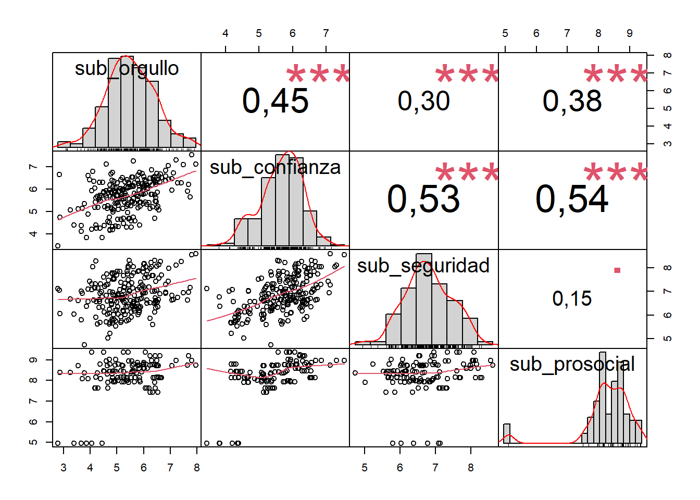
En esta nueva propuesta, todas las correlaciones son superiores a 0,3, salvo las de seguridad y comportamiento prosocial.
Correlaciones subdimensiones solo LAPOP
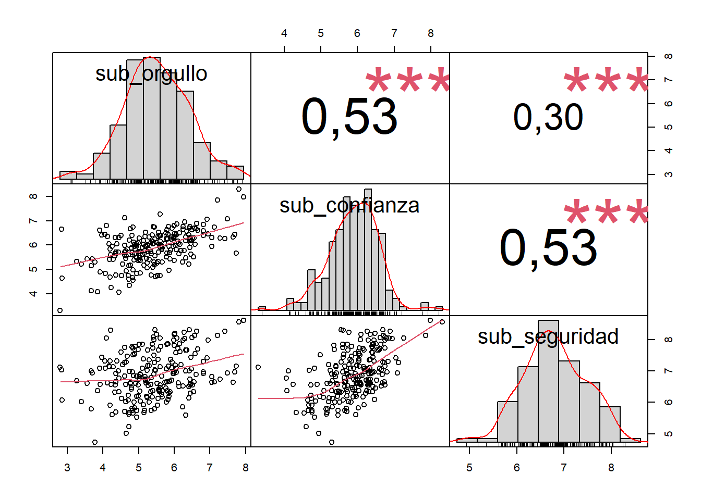
Al igual que en la propuesta anterior, se incluye una versión que cuenta exclusivamente con indicadores de LAPOP, lo que implica perder la subdimensión de comportamiento prosocial. Todas las correlaciones se mantienen sobre 0,3.